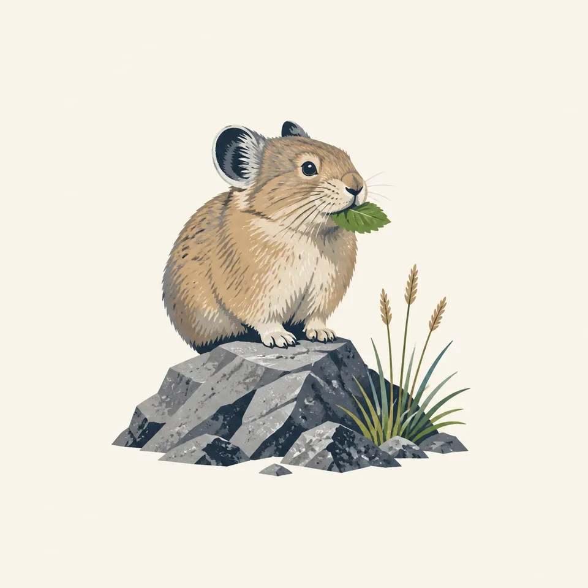
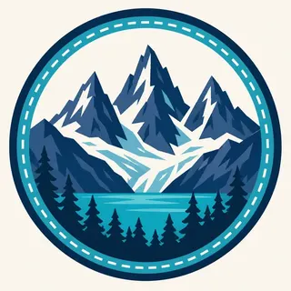

01
More than 300 glaciers
The most heavily glaciated area in the United States outside Alaska, by the park's own count, though most have retreated significantly over the last hundred years.
TrailMark Archive Edition
Washington | North Cascades Range
Established October 2, 1968, the same day as Redwood, over a range holding more glaciers than any national park outside Alaska.
Archive No. TM-NOCA-054
National Park since 1968
Collection American Alps
Park Overview
North Cascades National Park was established October 2, 1968, the same act of Congress that created Redwood National Park on the opposite side of the country.
The park is administered as the North Cascades National Park Service Complex: the national park itself, in north and south units, at about 505,000 acres, flanking Ross Lake National Recreation Area (about 117,000 acres) between them, with Lake Chelan National Recreation Area (about 62,000 acres) abutting the park's southern boundary, for a complex total near 684,305 acres.
More than 300 glaciers and countless snowfields cover the range, making it the most heavily glaciated area in the United States outside Alaska, by the park's own nature page.
Emotional Thesis
The header painting sets sharp granite spires and a visible glacier over a turquoise lake, dense conifer forest holding the foreground. That contrast, alpine ice directly above temperate forest, is the range's defining feature.
Most of the more than 300 glaciers here have shrunk dramatically over the last century, the park's own monitoring program documents, a change tied to reduced precipitation and warmer summers. The ice in the header painting is a present reality, not a permanent guarantee.
Landscape Highlights
01
The most heavily glaciated area in the United States outside Alaska, by the park's own count, though most have retreated significantly over the last hundred years.
02
Sharp, glacially sculpted summits give the range its "American Alps" reputation among visitors and climbers.
03
Two National Recreation Areas, administered alongside the park, carry the range's namesake lakes, Ross Lake wedged between the park's north and south units.
Wildlife
American pikas, described by the park as an iconic species of its talus slopes, spend summer building haypiles of vegetation to survive winter without hibernating. The extra drawing, a pika with a blade of grass, is the archive's image of that habit.

01
Pika research here has found abundance declining at lower elevations during low-snowpack years while holding steady or rising where snow persists longer.
02
Marmots share the park's alpine talus habitat with pikas and are studied alongside them as climate-sensitive species.
03
Neither pikas nor marmots hibernate in quite the same way; pikas stay active near their haypiles through winter rather than sleeping through it entirely.
Geology
The North Cascades hold more than 300 glaciers, most of them shrinking, across some of the most rugged, glacially carved terrain in the contiguous United States.
01
Reduced precipitation and warmer summers, tied to a changing climate, are the causes NPS names for the documented retreat.
02
Disappearing glaciers affect more than the peaks themselves; the park's nature page links glacier loss to changes in soil development, vegetation, and salmon-supporting aquatic ecosystems downstream.
03
The park's dedicated statistics page was not available at the time this essay was researched; acreage figures here come from the park's Foundation Document instead.
The main season for high-elevation trails, glacier viewing, and access to both national recreation areas.
Larch trees turn gold at elevation before snow returns; access to higher trails narrows as the season advances.
Heavy snowfall closes most high routes; North Cascades Highway (State Route 20) closes seasonally through the range.
Snowmelt is gradual; many high-elevation trails remain snow-covered well into the season.
Photography
A jagged peak alone could be almost any range. A visible glacier above dense conifer forest, close together in one frame, is the specific North Cascades pairing.
01
Ross Lake and the range's alpine tarns can mirror the surrounding peaks on a calm day, doubling the visual drama.
02
A distant white patch can read as snow rather than a glacier; a closer view that shows crevasse texture reads as ice.
03
Rainier is one dominant volcanic cone; the North Cascades are a range of many sharp peaks. Keep more than one summit in frame to tell them apart.
Field Notes
More than three hundred glaciers sit here, and the count keeps being revised downward as they shrink.
TrailMark Field Notes

Badge Story
The badge fails if it looks like one mountain. Multiple sharp summits with visible glacier ice are what separate this range from a single-cone volcano.
Cool blues and grays for rock and ice, warmer green for the forest below.
Multiple peaks in silhouette, not one dominant summit.
A turquoise lake at the base ties the mark to Ross Lake or Lake Chelan.
Archive No.054
LocationNorth Cascades Range
ReleaseAmerican Alps Mark
Stewardship / Safety
North Cascades is one of the least-visited mainland national parks, and its terrain is correspondingly serious: glaciers, steep rock, and a seasonal highway.
North Cascades Highway closes with the first heavy snow each year and reopens only once conditions allow; check status before planning a drive through the range.
Glacier travel requires proper equipment and experience; crevasses are a real hazard on many of the park's high routes.
Stay off fragile alpine vegetation and talus slopes that pikas and marmots depend on; recovery at this elevation is slow.
Backcountry permits are required for overnight wilderness travel; conditions vary widely across the park's north and south units.
Current conditions, fees, and alerts are on the National Park Service site.
Continue the Archive
Rainier is one massive volcanic cone; North Cascades is a whole range of sharp, glaciated summits. Glacier, already open, is the Rocky Mountain version of the same ice-carved terrain, farther east.